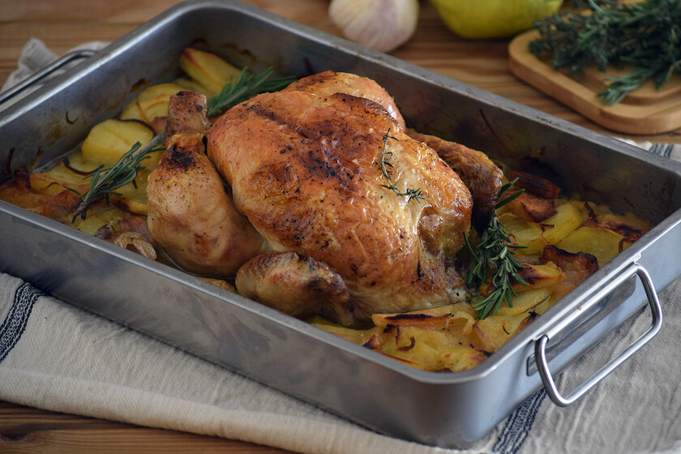

Pollo al horno
Receta de pollo al horno.

Ingredientes
- 1 pollo entero
- 4 patatas medianas
- 4 cebollas medianas
- Aceite de oliva
- Sal y pimienta
- Tomillo seco
Elaboración (Pasos)
- Comenzamos pelando las patatas. Una vez peladas, las cortamos en rodajas finas, de no más de 1 centímetro de grosor. Después, las ponemos como base en una bandeja para horno. Pelamos también las cebollas y las cortamos en tiras finas. La ponemos sobre la patata y salpimentamos todo.
- A continuación ponemos los muslos encima de las patatas y la cebolla. Le añadimos a todo un vaso de agua y un chorrete de aceite de oliva. Así quedará mas jugoso mientras se hornea. Nos aseguramos que en el fondo de la fuente, haya siempre humedad. Así la guarnición no se va a quemar. Salpimentamos y añadimos un buen pellizco de tomillo seco a cada muslo (o al pollo completo, si has elegido la pieza completa).
- Metemos el pollo al horno a 220ºC si utilizas muslos. calor arriba y abajo. Dejamos hornear unos 30 minutos, hasta que se dore bien. Si utilizas un pollo entero, horneamos a 190ºC.
- Cuando esté bien dorado, sacamos la bandeja del horno, le damos la vuelta a las piezas. Así, se cocinará el otro lado.
- Inmediatamente después, volvemos a meter la bandeja dentro del horno. Finalmente dejamos cocinar aproximadamente el mismo tiempo, hasta que todo quede bien cocinado.
Index